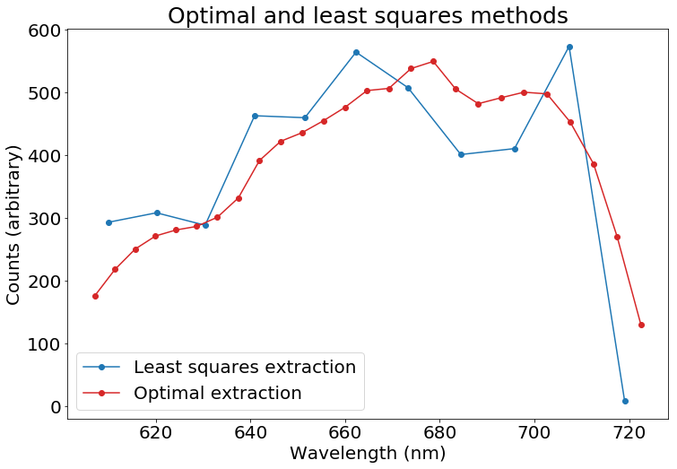
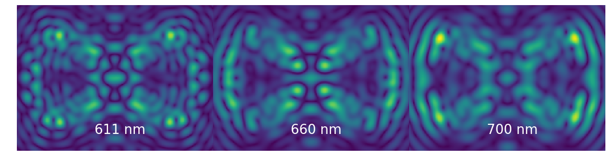

Plots and images for papers¶
This notebook is used to generate various plots and images for publications and slide decks. It is not well-documented, but provides tips that show how to plot various things.
In [1]:
import numpy as np
import glob
import matplotlib
import matplotlib.pyplot as plt
matplotlib.rcParams['image.origin'] = 'lower'
matplotlib.rcParams['image.interpolation'] = 'nearest'
import sys
codefolder = '../../../../crispy'
if codefolder not in sys.path: sys.path.append(codefolder)
import logging as log
from crispy.tools.initLogger import getLogger
log = getLogger('main')
from crispy.tools.image import Image
from crispy.PISCESparams import Params
# from crispy.params import Params
codefolder = '../../../crispy'
par = Params(codefolder)
In [2]:
cmap = 'RdBu'
Constructing new colormap¶
In [3]:
import matplotlib as mpl
C = np.array([(69,6,90), (42,118,142), (73,193,109), (243,229,30), (255,255,255)]).T
# C = np.array([(255,255,255),(243,229,30),(73,193,109),(42,118,142),(69,6,90)]).T
from scipy.interpolate import interp1d
fitvector = [0.0,1.,2.,3,4.]
vector = np.arange(0.0,C.shape[1]-1,0.01)
Rinter = interp1d(fitvector,C[0,:])
R = Rinter(vector)
Ginter = interp1d(fitvector,C[1,:])
G = Ginter(vector)
Binter = interp1d(fitvector,C[2,:])
B = Binter(vector)
newC = np.zeros((3,len(vector)))
newC[0,:] = R
newC[1,:] = G
newC[2,:] = B
cm = mpl.colors.ListedColormap(newC.T/255.0)
cmap=cm
Flatfield¶
In [4]:
lenslet_flat = Image(par.exportDir+"/lenslet_flat.fits").data
lenslet_mask = Image(par.exportDir+"/lenslet_mask.fits").data
plt.figure(figsize=(10,10))
plt.imshow(lenslet_flat*lenslet_mask, cmap=cmap,vmin=0.8,vmax=1.2)
plt.colorbar(fraction=0.046, pad=0.04)
plt.savefig("/Users/mrizzo/Downloads/PISCESthroughput.png")
plt.show()
crispy - INFO - Read data from HDU 1 of ../../../crispy/SimResults/lenslet_flat.fits
crispy - INFO - Read data from HDU 1 of ../../../crispy/SimResults/lenslet_mask.fits

PSFLets¶
In [5]:
psflets = Image(par.wavecalDir+"/hires_psflets_lam605.fits").data
fig, axarr = plt.subplots(4,4,figsize=(12,12))
for i in range(psflets.shape[0]):
for j in range(psflets.shape[1]):
axarr[i,j].imshow(psflets[i,j],vmin=0.0,cmap=cmap)
axarr[i,j].axis('off')
plt.subplots_adjust(wspace=0.0,hspace=0.05)
plt.savefig(par.wavecalDir+"psflets.png")
plt.savefig("/Users/mrizzo/Downloads/Psflets.png")
plt.show()
crispy - INFO - Read data from HDU 0 of ../../../crispy/ReferenceFiles/Calibra_170425//hires_psflets_lam605.fits

Extract cutout of microspectrum¶
In [6]:
from crispy.tools.locate_psflets import PSFLets
from crispy.tools.reduction import get_cutout
from crispy.unitTests import testCutout
lensnum = 0
subim = testCutout(par,par.codeRoot+'/Inputs/BB.fits',lensnum=lensnum)
polychrome = Image(par.wavecalDir+'/polychromeR70.fits').data
polyshape = polychrome.shape
fig, axarr = plt.subplots(1,12,figsize=(12,12))
print axarr.shape
axarr[0].imshow(subim.T,cmap=cmap)
axarr[0].axis('off')
for i in range(1,polyshape[0]+1):
axarr[i].imshow(testCutout(par,polychrome[i-1],lensnum=lensnum).T,cmap=cmap)
axarr[i].axis('off')
plt.subplots_adjust(wspace=0.1,hspace=0.05)
plt.savefig('/Users/mrizzo/Downloads/Microspectrum.png',dpi=200)
plt.show()
crispy - INFO - Read data from HDU 1 of ../../../crispy/Inputs/BB.fits
[518, 524, 537, 569]
crispy - INFO - Writing data to ../../../crispy/unitTestsOutputs/cutout.fits
crispy - INFO - Read data from HDU 0 of ../../../crispy/ReferenceFiles/Calibra_170425//polychromeR70.fits
(12,)
[518, 524, 537, 569]
crispy - INFO - Writing data to ../../../crispy/unitTestsOutputs/cutout.fits
[518, 524, 537, 569]
crispy - INFO - Writing data to ../../../crispy/unitTestsOutputs/cutout.fits
[518, 524, 537, 569]
crispy - INFO - Writing data to ../../../crispy/unitTestsOutputs/cutout.fits
[518, 524, 537, 569]
crispy - INFO - Writing data to ../../../crispy/unitTestsOutputs/cutout.fits
[518, 524, 537, 569]
crispy - INFO - Writing data to ../../../crispy/unitTestsOutputs/cutout.fits
[518, 524, 537, 569]
crispy - INFO - Writing data to ../../../crispy/unitTestsOutputs/cutout.fits
[518, 524, 537, 569]
crispy - INFO - Writing data to ../../../crispy/unitTestsOutputs/cutout.fits
[518, 524, 537, 569]
crispy - INFO - Writing data to ../../../crispy/unitTestsOutputs/cutout.fits
[518, 524, 537, 569]
crispy - INFO - Writing data to ../../../crispy/unitTestsOutputs/cutout.fits
[518, 524, 537, 569]
crispy - INFO - Writing data to ../../../crispy/unitTestsOutputs/cutout.fits
[518, 524, 537, 569]
crispy - INFO - Writing data to ../../../crispy/unitTestsOutputs/cutout.fits

In [7]:
from crispy.tools.locate_psflets import PSFLets
from crispy.tools.reduction import get_cutout,calculateWaveList
from crispy.unitTests import testCutout,testFitCutout
lensnum = 0
lam_midpts,lam_endpts = calculateWaveList(par)
subim = testCutout(par,par.codeRoot+'/Inputs/BB.fits',lensnum=lensnum)
spectrum = testFitCutout(par,par.codeRoot+'/Inputs/BB.fits',lensnum=lensnum)
polychrome = Image(par.wavecalDir+'/polychromeR70.fits').data
polyshape = polychrome.shape
fig, axarr = plt.subplots(12,figsize=(12,12))
print axarr.shape
axarr[0].imshow(subim,cmap=cmap)
axarr[0].annotate('Microspectrum',xy=(33,2.5),annotation_clip=False,fontsize=12)
axarr[0].axis('off')
for i in range(1,polyshape[0]+1):
axarr[i].imshow(spectrum[i-1]*testCutout(par,polychrome[i-1],lensnum=lensnum),cmap=cmap,vmin=0.0,vmax=np.amax(subim))
axarr[i].annotate('%.1f-%.1f nm' % (lam_endpts[i-1],lam_endpts[i]),xy=(33,2.5),annotation_clip=False,fontsize=12)
axarr[i].axis('off')
plt.subplots_adjust(wspace=0.00,hspace=0.05)
plt.savefig('/Users/mrizzo/Downloads/MicrospectrumVertical.png',dpi=200)
plt.show()
crispy - INFO - Reduced cube will have 11 wavelength bins
crispy - INFO - Read data from HDU 1 of ../../../crispy/Inputs/BB.fits
[518, 524, 537, 569]
crispy - INFO - Writing data to ../../../crispy/unitTestsOutputs/cutout.fits
crispy - INFO - Read data from HDU 1 of ../../../crispy/Inputs/BB.fits
crispy - INFO - Read data from HDU 0 of ../../../crispy/ReferenceFiles/Calibra_170425//polychromeR70.fits
(12,)
[518, 524, 537, 569]
crispy - INFO - Writing data to ../../../crispy/unitTestsOutputs/cutout.fits
[518, 524, 537, 569]
crispy - INFO - Writing data to ../../../crispy/unitTestsOutputs/cutout.fits
[518, 524, 537, 569]
crispy - INFO - Writing data to ../../../crispy/unitTestsOutputs/cutout.fits
[518, 524, 537, 569]
crispy - INFO - Writing data to ../../../crispy/unitTestsOutputs/cutout.fits
[518, 524, 537, 569]
crispy - INFO - Writing data to ../../../crispy/unitTestsOutputs/cutout.fits
[518, 524, 537, 569]
crispy - INFO - Writing data to ../../../crispy/unitTestsOutputs/cutout.fits
[518, 524, 537, 569]
crispy - INFO - Writing data to ../../../crispy/unitTestsOutputs/cutout.fits
[518, 524, 537, 569]
crispy - INFO - Writing data to ../../../crispy/unitTestsOutputs/cutout.fits
[518, 524, 537, 569]
crispy - INFO - Writing data to ../../../crispy/unitTestsOutputs/cutout.fits
[518, 524, 537, 569]
crispy - INFO - Writing data to ../../../crispy/unitTestsOutputs/cutout.fits
[518, 524, 537, 569]
crispy - INFO - Writing data to ../../../crispy/unitTestsOutputs/cutout.fits

Test fit cutout¶
In [8]:
from crispy.unitTests import testFitCutout
from crispy.IFS import reduceIFSMap
spectral_cube = reduceIFSMap(par,par.codeRoot+'/Inputs/BB.fits',method='lstsq')
spectrum = spectral_cube.data[:,50,50]
optspect = reduceIFSMap(par,par.codeRoot+'/Inputs/BB.fits',method='optext')
print optspect.data[:,54,54]
plt.figure(figsize=(12,8))
lam_midpts,lam_endpts = calculateWaveList(par)
print lam_midpts
# plt.plot(lam_midpts,spectrum,linewidth=2,color='#1f77b4')
plt.plot(lam_midpts,spectrum,'o-',color='#1f77b4')
lam_midpts,lam_endpts = calculateWaveList(par,method="optext")
print lam_midpts
spect = optspect.data[:,54,54]
ratio = np.mean(spectrum)/np.mean(spect)
print ratio
plt.plot(lam_midpts,spect*ratio,'o-',color='#d62728')
plt.tick_params(axis='both', which='major', labelsize=20)
plt.xlabel('Wavelength (nm)',fontsize=20)
plt.ylabel('Counts (arbitrary)',fontsize=20)
plt.title('Optimal and least squares methods',fontsize=25)
plt.legend(["Least squares extraction","Optimal extraction"],fontsize=20)
plt.savefig('/Users/mrizzo/Downloads/OptimalVSlstsq.png',dpi=200)
plt.show()
crispy - INFO - Read data from HDU 1 of ../../../crispy/Inputs/BB.fits
crispy - INFO - Reduced cube will have 11 wavelength bins
crispy - INFO - Writing data to ../../../crispy/SimResults/BB_red_lstsq.fits
crispy - INFO - Writing data to ../../../crispy/SimResults/BB_red_lstsq_resid.fits
crispy - INFO - Writing data to ../../../crispy/SimResults/BB_red_lstsq_model.fits
crispy - INFO - Elapsed time: 3.942860s
crispy - INFO - Read data from HDU 1 of ../../../crispy/Inputs/BB.fits
crispy - INFO - Reduced cube will have 26 wavelength bins
crispy - INFO - Writing data to ../../../crispy/SimResults/BB_red_optext.fits
crispy - INFO - Elapsed time: 1.575390s
[ 709.79148909 877.66751242 1007.85876998 1091.71198625 1130.21669437
1152.97189108 1212.19484587 1335.52753127 1574.56883724 1698.23212949
1753.2636447 1830.19850575 1916.58142738 2023.31571129 2037.32482301
2164.32821445 2210.22836009 2032.92731047 1939.36155509 1977.25413784
2012.95929796 2002.24151255 1822.13978 1553.69329229 1088.44415334
525.95026354]
crispy - INFO - Reduced cube will have 11 wavelength bins
[ 609.9964569 620.11350281 630.39834414 640.85376386 651.48259108
662.28770183 673.27201986 684.43851739 695.79021595 707.33018716
719.06155361]
crispy - INFO - Reduced cube will have 26 wavelength bins
[ 607.10887147 611.34869295 615.61812376 619.91737068 624.24664194
628.6061472 632.99609763 637.41670582 641.86818589 646.35075344
650.86462556 655.41002088 659.98715953 664.59626322 669.23755516
673.91126015 678.61760456 683.35681631 688.12912494 692.9347616
697.77395902 702.64695159 707.55397533 712.49526788 717.47106857
722.48161839]
0.248834361447

Optimal extraction¶
In [9]:
from crispy.tools.locate_psflets import PSFLets
from crispy.tools.reduction import get_cutout,calculateWaveList
from crispy.unitTests import testCutout,testFitCutout
import scipy
from scipy.special import erf
lensnum = 0
slicenum_list = [10]
for i in range(len(slicenum_list)):
slicenum=slicenum_list[i]
lam_midpts,lam_endpts = calculateWaveList(par)
subim = testCutout(par,par.codeRoot+'/Inputs/BB.fits',lensnum=lensnum)
plt.figure(figsize=(6,4))
x = np.arange(len(subim.T[slicenum]))-0.5
sig=2/2.35
plt.step(x,subim.T[slicenum],linewidth=3)
x2 = np.arange(0,len(subim.T[slicenum])-1,0.01)-0.5
val = np.mean(np.sum(x[:,np.newaxis]*subim,axis=0)/np.sum(subim,axis=0))
template = np.exp(-(x-val)**2/2./sig**2)/sig/np.sqrt(2.*np.pi)
template = (erf((x + 0.5 -val) / (np.sqrt(2) * sig)) - erf((x - 0.5-val) / (np.sqrt(2) * sig)))
val2 = val-0.5
template2 = (erf((x2 + 0.5 -val2) / (np.sqrt(2) * sig)) - erf((x2 - 0.5-val2) / (np.sqrt(2) * sig)))
b, a, _, _, _ = scipy.stats.linregress(template,subim.T[slicenum])
plt.step(x2,a+b*template2,linewidth=3)
plt.xlabel('Pixels in cross-dispersion direction',fontsize=15)
plt.ylabel('Detector counts',fontsize=15)
#plt.legend(["Pixel values in column","Gaussian matched filter"],fontsize=15)
plt.savefig('/Users/mrizzo/Downloads/Optimal_extraction.png',dpi=200)
plt.show()
crispy - INFO - Reduced cube will have 11 wavelength bins
crispy - INFO - Read data from HDU 1 of ../../../crispy/Inputs/BB.fits
[518, 524, 537, 569]
crispy - INFO - Writing data to ../../../crispy/unitTestsOutputs/cutout.fits

Plot distortion map¶
After thinking more about this, this is maybe not the correct way to calculate the distortion map...
In [10]:
from crispy.tools.locate_psflets import PSFLets
psftool = PSFLets()
lamlist = np.loadtxt(par.wavecalDir + "lamsol.dat")[:, 0]
allcoef = np.loadtxt(par.wavecalDir + "lamsol.dat")[:, 1:]
psftool.geninterparray(lamlist, allcoef)
# xindx = np.arange(-par.nlens/2, par.nlens/2)
# xindx, yindx = np.meshgrid(xindx, xindx)
xindx = np.arange(-50, 45)
yindx = np.arange(-50, 50)
lx = len(xindx)
ly = len(yindx)
xindx, yindx = np.meshgrid(xindx, yindx)
print lamlist[6]
allcoef_ideal = np.zeros(allcoef.shape)
indx = np.asarray([0, 1, 4, 10, 11, 14])
allcoef_ideal[:,indx] = allcoef[:,indx]
x,y = psftool.return_locations(lamlist[6], allcoef, yindx, xindx)
borderpix=4
good = (x > borderpix)*(x < 1024-borderpix)*(y > borderpix)*(y < 1024-borderpix)
psftool.geninterparray(lamlist, allcoef_ideal)
X,Y = psftool.return_locations(lamlist[6], allcoef_ideal, yindx, xindx)
U = x-X
V = y-Y
U[~good]= np.NaN
V[~good]= np.NaN
plt.figure(figsize=(12,12))
Q = plt.quiver(xindx[::2,::2], yindx[::2,::2], U[::2,::2], V[::2,::2],width=0.002,scale=700)
#plt.colorbar(fraction=0.046, pad=0.04)
plt.title('Distortion map',fontsize=15)
#qk = plt.quiverkey(Q, 0.9, 0.9, 2, r'$2 \frac{m}{s}$', labelpos='E',
# coordinates='figure')
plt.figure(figsize=(12,12))
plt.imshow(np.sqrt(U**2+V**2),cmap=cmap)
plt.title('Distortion map',fontsize=15)
plt.colorbar(fraction=0.046, pad=0.04)
print np.median(xindx[0,:]),np.median(yindx[:,0])
CS = plt.contour(xindx-np.median(xindx[0,:])+lx//2,yindx-np.median(yindx[:,0])+ly//2,np.sqrt(U**2+V**2),20,colors='w')
plt.clabel(CS, fontsize=15, inline=1)
plt.show()
665.0
-3.0 -0.5


Generic SPIE images¶
In [11]:
from crispy.params import Params
par.hdr
Out[11]:
SIMPLE = T / conforms to FITS standard
BITPIX = 8 / array data type
NAXIS = 0 / number of array dimensions
EXTEND = T
COMMENT
COMMENT ************************************************************
COMMENT ********************** General parameters ******************
COMMENT ************************************************************
COMMENT
NLENS = 108 / # lenslets across array
PITCH = 0.000174 / Lenslet pitch (meters)
INTERLAC= 2 / Interlacing
PHILENS = 26.56505117707799 / Rotation angle of the lenslets (deg)
PIXSIZE = 1.3E-05 / Pixel size (meters)
LENSAMP = 0.5 / Lenslet sampling (lam/D)
LSAMPWAV= 600.0 / Lenslet sampling wavelength (nm)
FWHM = 2 / FHWM of PSFLet at detector (pixels)
FWHMLAM = 660.0 / Wavelength at which FWHM is defined (nm)
NPIX = 1024 / Number of detector pixels
DISPDIST= F / Use PISCES distortion/dispersion?
COMMENT
COMMENT ************************************************************
COMMENT ********************** Cube Extraction *********************
COMMENT ************************************************************
COMMENT
R = 70 / Spectral resolution of final cube
CALDIR = 'Calibra_170425' / Directory of wavelength solution
CUBEMODE= 'Least squares' / Method used to extract data cube
LAM_MIN = 610.4545454545455 / Minimum (central) wavelength of extracted cube
LAM_MAX = 719.5454545454545 / Maximum (central) wavelength of extracted cube
DLOGLAM = 0.01771264020071195 / Log spacing of extracted wavelength bins
NLAM = 11 / Number of extracted wavelengths
FLAT = T / Applied lenslet flatfield
MASK = T / Applied lenslet mask
SMOOTHED= T / Cube smoothed over bad lenslets
In [12]:
%pylab inline --no-import-all
from crispy.tools.reduction import calculateWaveList
import matplotlib as mpl
from matplotlib.colors import LogNorm
lam_midpts,lam_endpts = calculateWaveList(par,method='optext')
print lam_midpts
print 660.*np.linspace(1.-0.18/2,1.+0.18/2,45)
cube = Image(filename='/Users/mrizzo/IFS/OS5/with_lowfc/os5_spc_031.fits').data
print cube.shape
plt.figure()
plt.imshow(np.sqrt(cube[15,70:-70,40:-40]))
print cube[15,70:-70,40:-40].shape
h,w = cube[15,70:-70,40:-40].shape
outarray = np.zeros((h,w*3))
outarray[:,:w] = cube[4,70:-70,40:-40]
outarray[:,w:w*2] = cube[22,70:-70,40:-40]
outarray[:,w*2:] = cube[-8,70:-70,40:-40]
plt.figure(figsize=(16,4))
plt.imshow(np.sqrt(outarray),vmin=1e-14)
plt.axis('off')
plt.annotate('611 nm',xy=(w/2.-25,20),color='white',fontsize=26)
plt.annotate('660 nm',xy=(w+w/2.-25,20),color='white',fontsize=26)
plt.annotate('700 nm',xy=(2*w+w/2.-25,20),color='white',fontsize=26)
print np.amax(outarray)
plt.tight_layout()
plt.subplots_adjust(left=0.0, right=1, top=1, bottom=0)
plt.savefig("/Users/mrizzo/Downloads/InputSlices.png",dpi=200)
Populating the interactive namespace from numpy and matplotlib
crispy - INFO - Reduced cube will have 26 wavelength bins
[ 607.10887147 611.34869295 615.61812376 619.91737068 624.24664194
628.6061472 632.99609763 637.41670582 641.86818589 646.35075344
650.86462556 655.41002088 659.98715953 664.59626322 669.23755516
673.91126015 678.61760456 683.35681631 688.12912494 692.9347616
697.77395902 702.64695159 707.55397533 712.49526788 717.47106857
722.48161839]
[ 600.6 603.3 606. 608.7 611.4 614.1 616.8 619.5 622.2 624.9
627.6 630.3 633. 635.7 638.4 641.1 643.8 646.5 649.2 651.9
654.6 657.3 660. 662.7 665.4 668.1 670.8 673.5 676.2 678.9
681.6 684.3 687. 689.7 692.4 695.1 697.8 700.5 703.2 705.9
708.6 711.3 714. 716.7 719.4]
crispy - INFO - Read data from HDU 0 of /Users/mrizzo/IFS/OS5/with_lowfc/os5_spc_031.fits
(45, 315, 315)
(175, 235)
3.35319633686e-13


In [13]:
IFS_detector = Image(filename='/Users/mrizzo/IFS/OS5_SIM_2.0_noiseless/average/average_target_star_detector.fits').data
import matplotlib.colors as colors
plt.figure(figsize=(9.0,6))
img = IFS_detector[300:-300,200:-200]
print np.amin(img)
plt.imshow(img,cmap=cmap,vmin=1e-5,norm=colors.PowerNorm(gamma=1./2.))
# plt.colorbar(fraction=0.046, pad=0.04)
plt.axis('off')
plt.tight_layout()
plt.subplots_adjust(left=0.0, right=1, top=1, bottom=0)
plt.savefig("/Users/mrizzo/Downloads/DetectorMap.png",dpi=200)
crispy - INFO - Read data from HDU 1 of /Users/mrizzo/IFS/OS5_SIM_2.0_noiseless/average/average_target_star_detector.fits
2.31331e-17

In [14]:
IFS_detector = Image(filename='/Users/mrizzo/IFS/OS5_SIM_2.0_t1000/average_47Umac/average_target_star_detector.fits').data
import matplotlib.colors as colors
plt.figure(figsize=(10,6))
img = IFS_detector[300:-300,200:-200]
print np.amin(img)
plt.imshow(img,cmap=cmap,vmin=1e-4)
plt.colorbar(fraction=0.046, pad=0.04)
plt.axis('off')
plt.tight_layout()
plt.subplots_adjust(left=0.0,bottom=0)
plt.savefig("/Users/mrizzo/Downloads/NoisyDetectorMap.png",dpi=200)
crispy - INFO - Read data from HDU 1 of /Users/mrizzo/IFS/OS5_SIM_2.0_t1000/average_47Umac/average_target_star_detector.fits
3.67094e-05

In [15]:
cube = Image(filename='/Users/mrizzo/IFS/OS5_SIM_2.0_noiseless/average/average_target_star_detector_red_optext_flatfielded.fits').data
print cube.shape
trim = 30
plt.imshow(np.sqrt(cube[15,trim:-trim,trim:-trim]))
print cube[15,trim:-trim,trim:-trim].shape
h,w = cube[15,trim:-trim,trim:-trim].shape
outarray = np.zeros((h,w*3))
outarray[:,:w] = cube[1,trim:-trim,trim:-trim]
outarray[:,w:w*2] = cube[11,trim:-trim,trim:-trim]
outarray[:,w*2:] = cube[-6,trim:-trim,trim:-trim]
plt.figure(figsize=(12,4))
plt.imshow(outarray,vmin=1e-10,norm=colors.PowerNorm(gamma=1./2.),cmap=cmap)
plt.axis('off')
plt.annotate('611 nm',xy=(w/2.-20,5),color='white',fontsize=26)
plt.annotate('660 nm',xy=(w+w/2.-20,5),color='white',fontsize=26)
plt.annotate('700 nm',xy=(2*w+w/2.-20,5),color='white',fontsize=26)
print np.amax(outarray)
plt.tight_layout()
plt.subplots_adjust(left=0.0, right=1, top=1, bottom=0)
plt.savefig("/Users/mrizzo/Downloads/OutputSlices.png",dpi=200)
crispy - INFO - Read data from HDU 1 of /Users/mrizzo/IFS/OS5_SIM_2.0_noiseless/average/average_target_star_detector_red_optext_flatfielded.fits
(19, 108, 108)
(48, 48)
3.31431770917e-08


Residuals¶
In [16]:
BB = Image(par.codeRoot+'/Inputs/BB.fits').data
BBres = Image(par.exportDir+'/BB_red_lstsq_resid.fits').data
# from crispy.params import Params
# par=Params(codefolder)
# par.wavecalDir = par.prefix+'/wavecalR50_660/'
# BB = Image(par.wavecalDir+'polychromeR50stack.fits').data
# BBres = reduceIFSMap(par,par.wavecalDir+'polychromeR50stack.fits',method='lstsq')
# BBres=BBres.data
# plt.figure(figsize=(20,12))
# plt.imshow(BBres)
plt.figure(figsize=(20,12))
plt.imshow(BBres[850:-50,150:300]/np.amax(BB[850:-50,150:300]),cmap='coolwarm')
plt.colorbar()
# plt.imshow(BB[100:200,850:950])
# plt.imshow(BBres[100:200,850:950])
crispy - INFO - Read data from HDU 1 of ../../../crispy/Inputs/BB.fits
crispy - INFO - Read data from HDU 1 of ../../../crispy/SimResults/BB_red_lstsq_resid.fits
Out[16]:
<matplotlib.colorbar.Colorbar at 0x12169c190>

In [17]:
from astropy.io import fits
BB = fits.getdata(par.codeRoot+"/Inputs/BB.fits")
BBres = fits.getdata(par.exportDir+'/BB_red_lstsq_resid.fits')
BBmod = fits.getdata(par.exportDir+'/BB_red_lstsq_model.fits')
cmap='viridis'
ftsize = 15
plt.figure(figsize=(10,10))
plt.subplot(131)
plt.imshow(BB[850:-100,150:300].T,vmin=-50,vmax=1000,cmap=cmap)
plt.axis('off')
plt.colorbar(fraction=0.046, pad=0.04,orientation='horizontal')
plt.title('Data',fontsize=ftsize)
plt.subplot(132)
plt.imshow(BBmod[850:-100,150:300].T,vmin=-50,vmax=1000,cmap=cmap)
plt.axis('off')
plt.colorbar(fraction=0.046, pad=0.04,orientation='horizontal')
plt.title('Model',fontsize=ftsize)
plt.subplot(133)
plt.imshow(100*BBres[850:-100,150:300].T/np.amax(BB[850:-120,150:300].T),vmin=-10,vmax=10,cmap=cmap)
plt.axis('off')
plt.colorbar(fraction=0.046, pad=0.04,orientation='horizontal')
plt.title('Residuals (% of data max)',fontsize=ftsize)
plt.tight_layout()
plt.show()

Simple broadband map¶
In [18]:
BB = Image(par.codeRoot+'/Inputs/BB.fits').data
flat = Image(par.codeRoot+'/Inputs/Flat637.fits').data
plt.figure(figsize=(20,12))
plt.subplot(121)
plt.imshow(flat[400:500,150:300],cmap='viridis')
plt.axis('off')
plt.subplot(122)
plt.imshow(BB[400:500,150:300],cmap='viridis')
plt.axis('off')
plt.tight_layout()
plt.savefig("/Users/mrizzo/Downloads/flatBB.png",dpi=200)
plt.show()
crispy - INFO - Read data from HDU 1 of ../../../crispy/Inputs/BB.fits
crispy - INFO - Read data from HDU 1 of ../../../crispy/Inputs/Flat637.fits

Bijan’s SPC PSF explanation¶
In [99]:
from crispy.params import Params
from crispy.tools.inputScene import adjust_krist_header
from crispy.IFS import polychromeIFS
par = Params('../../../crispy')
offaxis = Image('/Users/mrizzo/IFS/OS5/offaxis/spc_offaxis_psf.fits')
adjust_krist_header(offaxis,lamc=660.)
fileshape = offaxis.data.shape
par.saveRotatedInput = True
lamlist = 660.*np.linspace(1.-par.BW/2.,1.+par.BW/2.,fileshape[0])
detector = polychromeIFS(par,lamlist,offaxis,QE=True)
crispy - INFO - Read data from HDU 0 of /Users/mrizzo/IFS/OS5/offaxis/spc_offaxis_psf.fits
crispy - INFO - The number of input pixels per lenslet is 5.000000
crispy - INFO - Using PSFlet gaussian approximation
crispy - WARNING - Assuming slices are evenly spread in wavelengths
crispy - INFO - Writing data to ../../../crispy/SimResults/imagePlaneRot.fits
crispy - INFO - Writing data to ../../../crispy/SimResults/detectorFrame.fits
crispy - INFO - Done.
crispy - INFO - Performance: 32 seconds total
In [101]:
rotatedPSF = fits.getdata(par.exportDir+'/imagePlaneRot.fits')
fontsize=20
print(rotatedPSF.shape)
plt.figure(figsize=(15,15))
plt.subplot(132)
fig = rotatedPSF[25,21:40,43:54]
fig /= np.amax(fig)
plt.imshow(fig)
print fig[fig>0.5]
plt.colorbar(fraction=0.046, pad=0.04,orientation='horizontal')
plt.axis('off')
figshape = fig.shape
x = np.arange(figshape[1])
y = np.arange(figshape[0])
X,Y = np.meshgrid(x,y)
CS=plt.contour(X,Y,fig,levels=np.array([0.25,0.5,0.75]),colors='w')
plt.clabel(CS, inline=1, fontsize=10)
plt.title('Offaxis PSF on lenslet array',fontsize=fontsize)
plt.subplot(131)
fig = offaxis.data[25,90:171,175:222]
plt.imshow(fig/np.amax(fig))
plt.colorbar(fraction=0.046, pad=0.04,orientation='horizontal')
plt.title('Offaxis PSF from John Krist',fontsize=fontsize)
plt.axis('off')
plt.subplot(133)
fig = detector[410:600,640:750]
plt.imshow(fig/np.amax(fig))
plt.colorbar(fraction=0.046, pad=0.04,orientation='horizontal')
plt.axis('off')
plt.title('Offaxis PSF on IFS detector',fontsize=fontsize)
(45, 72, 72)
[ 0.66538638 1. 0.76297712 0.66954559 0.70729703]
Out[101]:
<matplotlib.text.Text at 0x127c608d0>

In [97]:
plt.figure(figsize=(15,10))
fig = detector[480:530,640:750]
fig /= np.amax(fig)
plt.imshow(fig)
plt.axis('off')
plt.title('Center of Offaxis PSF on IFS detector',fontsize=fontsize)
plt.colorbar(fraction=0.046, pad=0.04,orientation='horizontal')
figshape=fig.shape
x = np.arange(figshape[1])
y = np.arange(figshape[0])
X,Y = np.meshgrid(x,y)
CS=plt.contour(X,Y,fig,levels=np.array([0.25,0.5,0.75]),colors='w')
plt.clabel(CS, inline=1, fontsize=10)
Out[97]:
<a list of 15 text.Text objects>